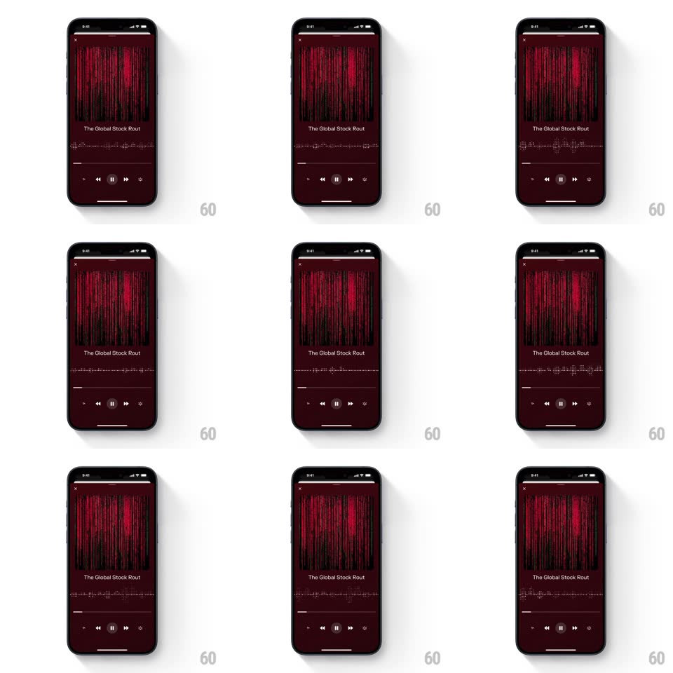

Media
Frame-by-frame

Rebuild this animation 1:1: Perplexity's audio player - a full-screen dark player whose dense vertical waveform pulses in real time with the spoken track.

Rebuild this animation 1:1: Perplexity's audio player - a full-screen dark player whose dense vertical waveform pulses in real time with the spoken track.
## Integration
Integration: stack-agnostic spec - springs given as stiffness/damping, timed motions as duration + curve; map every value to your framework and animation library of choice.
## Scene
A deep maroon full-screen player: a thin progress line at top, then a dense field of vertical waveform bars filling the upper half, the episode title ("The Global Stock Rout"), a dotted scrubber line, and a control row (skip back 15, previous, pause, next, skip forward 15, playback speed).
## Motion spec
Pattern: live waveform visualizer.
- The waveform is energy-mapped to the audio: bars rise and fall with amplitude (attack 60ms, release 180ms), brighter red-pink at peaks, dimming to dark maroon in quiet passages; the played region of the waveform is lit, the unplayed region sits at 30% opacity.
- The top progress line fills left to right in sync (continuous, no steps).
- The dotted scrubber line under the title has a moving playhead dot; dragging it scrubs, and the waveform's lit region follows the scrub position immediately (100ms catch-up).
- Pause/play: the pause glyph morphs to play (200ms path morph) and the waveform relaxes to a low idle ripple (bars at 10% height, slow 2s undulation) when paused.
- Skip buttons nudge the waveform sideways (translateX +-12px with spring ~400/24 return) as position jumps.
## Calibration
- Bars are thin (2-3px) and densely packed (~60 across) with rounded caps - a field, not a graphic EQ with chunky blocks.
- Idle (paused) state must still breathe slightly; never freeze the bars mid-height.
## Reduced motion
Static waveform outline; only the progress line moves.
## Don't miss
- The whole screen is monochrome maroon/red - the waveform's brightness carries all the information.
- Controls are small and quiet at the bottom; the waveform owns the screen.